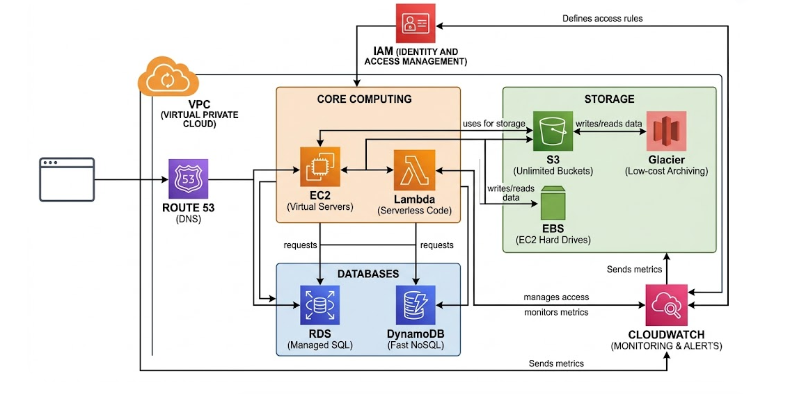
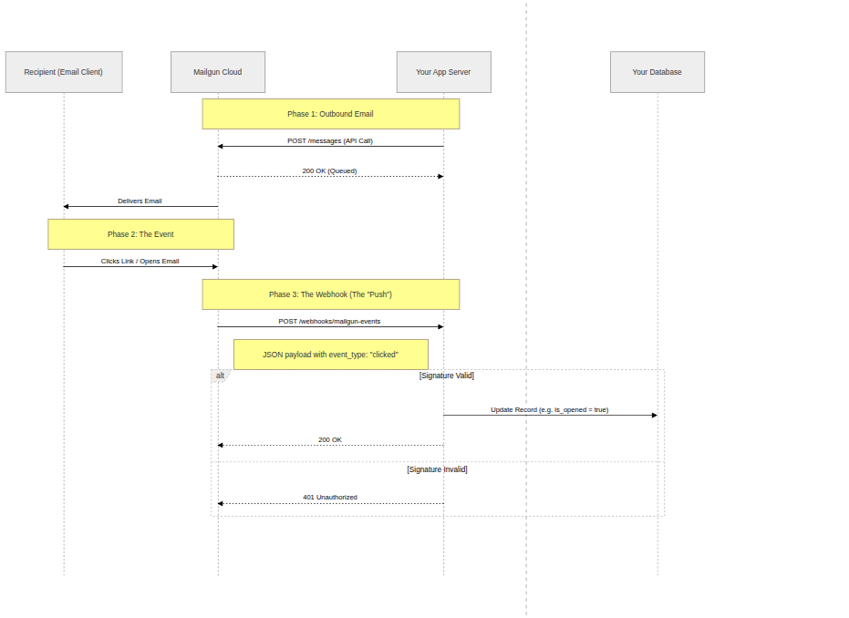
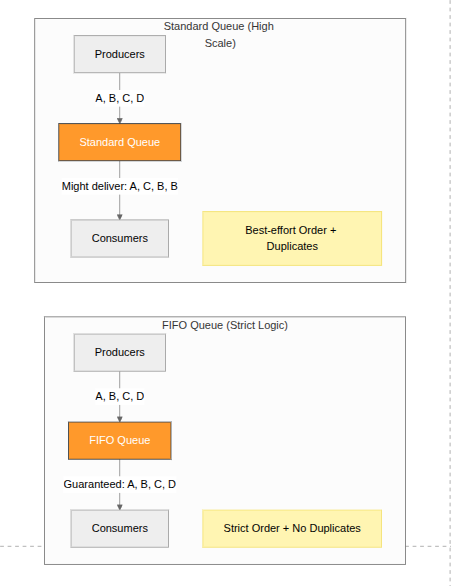
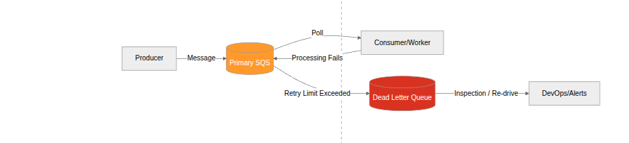
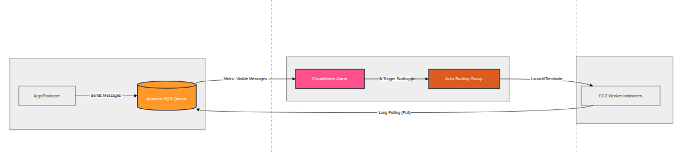
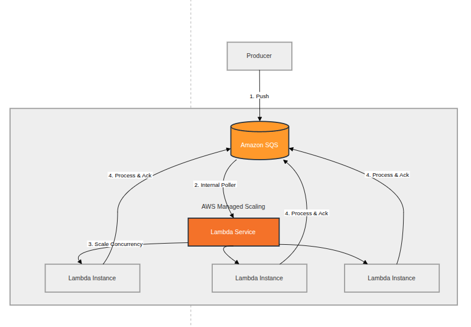

AWS examples
Key AWS services

Compute (The Brains)
- EC2 (Elastic Compute Cloud): Virtual servers where you have full control over the OS and software.
- Lambda: A "serverless" service that runs your code only when triggered, so you don't manage any servers.
- Elastic Beanstalk: The "easy button" for deploying web apps; you upload code, and AWS handles the infrastructure.
Storage (The Memory)
- S3 (Simple Storage Service): Unlimited "buckets" to store files like images, videos, or backups.
- EBS (Elastic Block Store): Hard drives for your EC2 instances that persist even if the server is stopped.
- Glacier: Low-cost storage for long-term archiving (data you rarely need to look at).
Databases (The Ledger)
- RDS (Relational Database Service): Managed SQL databases (MySQL, PostgreSQL) that handle their own patching and backups.
- DynamoDB: A super-fast NoSQL database designed for massive scale and simple key-value lookups.
Networking & Content (The Roads)
- VPC (Virtual Private Cloud): Your own private, isolated section of the AWS network to launch resources.
- CloudFront: A Global Content Delivery Network (CDN) that makes your website load fast by caching it near your users.
- Route 53: A highly available Domain Name System (DNS) service that connects URLs to your resources.
Security & Monitoring (The Guards)
- IAM (Identity and Access Management): The central hub where you define who can access which AWS resources.
- CloudWatch: A monitoring dashboard that tracks performance metrics and sends alerts if things break.
Webhooks
A webhook is a method of augmenting or altering the behavior of a web page or web application with custom callbacks. These callbacks may be maintained, modified, and managed by third-party users who need not be affiliated with the originating website or application. Example: Mail tracking service

Simple Queue Service (SQS)
Amazon SQS is a fully managed message queuing service that lets you send, store, and receive messages between software components at any volume, without losing messages or requiring other services to be available

1. Standard Queue
The default queue type — built for maximum throughput.
Key characteristics:
- Unlimited throughput — supports a nearly unlimited number of transactions per second
- At-least-once delivery — a message may be delivered more than once (duplicates possible)
- Best-effort ordering — messages are generally delivered in order, but not guaranteed
- Use when: order doesn't matter and your application can handle duplicate messages (e.g., sending notifications, log ingestion, background jobs)
2. FIFO Queue (First-In-First-Out)
Built for scenarios where order and exactly-once processing matter.
Key characteristics:
- Limited throughput — up to 3,000 messages/sec with batching, or 300 messages/sec without
- Exactly-once processing — duplicates are eliminated via deduplication IDs
- Strict ordering — messages are delivered and processed in the exact order they were sent
- Message groups — supports MessageGroupId to allow parallel processing of independent message streams within the same queue
- Use when: order is critical — e.g., financial transactions, order processing, inventory updates
Side-by-Side Comparison
| Feature | Standard Queue | FIFO Queue |
|---|---|---|
| Throughput | Unlimited | Up to 3,000 msg/sec |
| Message ordering | Best-effort | Strict (guaranteed) |
| Delivery | At-least-once | Exactly-once |
| Duplicate handling | Possible | Prevented |
| Naming | Any name | Must end in .fifo |
| Cost | Lower | Slightly higher |
Quick Rule of Thumb
Use Standard when you need speed and scale. Use FIFO when you need accuracy and order.
Dead letter queue
A Amazon SQS Dead Letter Queue (DLQ) is an Amazon Simple Queue Service feature that captures messages that could not be successfully processed by a consuming application.

Load balancing using SQS
SQS + cloudwatch

Think of Amazon SQS as:
A pressure gauge
- Few messages → low pressure → fewer workers
- Many messages → high pressure → spawn more workers
Use:
- Amazon EC2 Auto Scaling
- CloudWatch metric:
👉 ApproximateNumberOfMessagesVisible
How it works:
- Messages pile up in SQS
- Metric increases
- Auto Scaling policy triggers
- More EC2 instances (consumers) launch
- They start polling SQS
Example Scaling Rule
- If messages > 1000 → add 5 instances
- If messages < 100 → remove instances
SQS + serverless

Use: - AWS Lambda + SQS triggerHow it works:
- SQS automatically invokes Lambda
- AWS handles scaling for you
- Concurrency increases as queue grows
Key Details:
- Each batch of messages → one Lambda invocation
- Scaling is near real-time
- You can control:
- Batch size
- Max concurrency